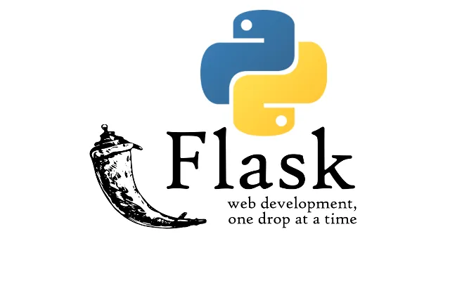

Flask Workshop¶

Welcome to the Flask Workshop! This guide will introduce you to Flask, a powerful web framework for Python, and guide you through building web applications from scratch.
1. Basics of Web Development¶
Web development is the process of building and maintaining websites and web applications that run online. Web development began with the creation of the World Wide Web in 1989 by Sir Tim Berners-Lee, a British scientist working at CERN (European Organization for Nuclear Research).
He proposed a system for sharing information across a network using hypertext, which led to the development of HTML (Hypertext Markup Language) and HTTP (Hypertext Transfer Protocol)).
Now for understanding basics of web development, there's some key concepts to understand, and some of them are listed below:
- Front-end Development: Front end basically means it is what u see on the screen. It works on how the information is displayed to the user, and how interactive it is. Some common languages are HTML, CSS, Javascript.
-
Back-end Development: Backend is where the data gets processed, and functionality is done and is sent back to the user. There's much to back-end development, but some of the basic concepts are listed below:
-
Server-Side Languages: Server-side languages are programming languages used to build the backend of a web application, which includes handling data, business logic, and server-side operations. The backend is crucial for creating dynamic, data-driven applications and supports the frontend by processing requests, interacting with databases, and managing content delivery. Flask is what we'll be covering today, and this is a server-side framework by Python.
- Databases: Data from the user is stored into databases such as MySQL, PostgreSQL, MongoDB, or SQLite.
- API's: APIs (Application Programming Interfaces): APIs enable communication between the frontend and backend of a web application. Think of an API as a messenger or "middleman" in a restaurant: when a customer (the frontend) places an order, the waiter (the API) takes the order to the kitchen (the backend), where the chef prepares the food. The waiter then brings the prepared food back to the customer. Similarly, APIs handle requests from the frontend, retrieve the necessary data or actions from the backend, and deliver the response back to the frontend, ensuring smooth interaction between different parts of a web application.
2. Introduction to Python¶
A hearty welcome to all who made it to the introductory workshop for python and flask!
First, we will be covering the basic concepts of Python, then we will be moving on to flask. Now, what is python? is it a snake? No, its a programming language. Weird name ryt? This was named by "Guido van Rossum", and it was because he saw a real life python. No no im kidding, it was because of the series "Monty Python's Flying Circus", he wanted to keep something short and simple.
Python is a very versatile language and is used in a lot of different CS fields such as
- AI and ML
- Data Analysis
- Web development
- Robotics and Computer Vision
Why Python?
- Python works on different platforms (Windows, Mac, Linux, Raspberry Pi, etc).
- Python has a simple syntax similar to the English language.
- Python has syntax that allows developers to write programs with fewer lines than some other programming languages.
- Python runs on an interpreter system, meaning that code can be executed as soon as it is written. This means that prototyping can be very quick.
- Python can be treated in a procedural way, an object-oriented way or a functional way.
Now, coming to the main coding and fun part, its divided into sections as below.
3. Workshop Prerequisites¶
Before the workshop, ensure you have:
- Python (version 3.x) installed
- A code editor, like Visual Studio Code
- pip, the Python package manager (usually included with Python)
For a step-by-step setup guide, Click here.
If you want to acess some of the useful VS Code shortcuts, that you could use in this workshop, Click here
(But try to use them minimally, as there are no shortcuts in life :) )
4. Displaying hello world in terminal¶
print("output:hello world")
output: hello world
Using the print function, any line of statement, character can be displayed. "Print" is for showing the output.
5. Variables and Variable names¶
Variables are names to which we assign values.
For example, x=5. x is the variable name here.
Code example:
x=5
print("output:",x)
output: 5
Variables can be reassigned, and the latest value gets printed.
x=5
x="Introduction to python and flask"
print("latest output:",x)
latest output: Introduction to python and flask
Variables are case sensitive.
x=5
X=6
print("output:",X)
output:6
Some rules for the variable names:
- A variable name must start with a letter or the underscore character
- A variable name cannot start with a number
- A variable name can only contain alpha-numeric characters and underscores (A-z, 0-9, and _ )
- Variable names are case-sensitive (age, Age and AGE are three different variables)
- A variable name cannot be any of the Python keywords such as "if, elif, while, for" etc.
Assigning multiple values for example:
x,y,z=10,15,20
print(x,y,z)
10 15 20
6. Data Types¶
| Text Type: | str |
|---|---|
| Numeric Types: | int, float, complex |
| Sequence Types: | list, tuple, |
| Mapping Type: | dict |
| Boolean Type: | bool |
We can get the data type of a variable using the type function and the code function is shown below.
x=5
print(type(x))
<class 'int'>
Type casting- Changing the type of a variable to another type considering it follows some rules.\ Code examples:
x=str(5)
print("output:",x)
print("type:",type(x))
output: 5
type: <class 'str'>
x=int("sai")
print(x)
print(type(x))
The above code gives an error, because "sai" cannot be converted to an integer.
7. Conditional Keywords ( if elif else)¶
In conditional keywords, a statement is given, and "if" it is true, then it will print, or else it will go to the next "else".
For example:
x=5
if(x==5):
print("Yes it is 5")
elif(x==4):
print("No, it is 4")
else:
print("No, it is not 5")
Yes it is 5
8. Loops ¶
Loops repeat a block of code multiple times, until the condition is false.
While loop¶
i=0
while(i<3):
print(i)
i=i+1
0
1
2
For loop¶
for i in range(3):
print(i)
0
1
2
9. Functions¶
This is the main part which is used for flask. Now, Functions are blocks of code that can be repeated to do a specific task. There's a return statement to return the value that is done in the function. For example:
def x():
return 1
y=x()
print(y)
1
def sum(x):
return x+x
y=sum(3)
print(y)
6
def greet(name):
"""Function to greet a person with their name."""
print("Hello, " + name + "!")
# Calling the function
greet("Alice") # Output: Hello, Alice!
greet("Bob") # Output: Hello, Bob!
Hello, Alice!
Hello, Bob!
10. Strings¶
Strings are used with '' or "".
x="sai"
y='sai'
print(x)
print(y)
sai
sai
String functions:
text = " Hello, Python! "
text_with_digits = "12345"
number = 123
# 1. Basic String Operations
print("1. Basic String Operations")
length = len(text)
print("Length of 'text':", length) # Output: 19
str_number = str(number)
print("Converted Number to String:", str_number) # Output: "123"
print("-" * 30)
# 2. String Case Manipulation
print("2. String Case Manipulation")
print("Lowercase:", text.lower()) # Output: " hello, python! "
print("Uppercase:", text.upper()) # Output: " HELLO, PYTHON! "
print("Capitalized:", text.capitalize()) # Output: " hello, python! "
print("Title Case:", text.title()) # Output: " Hello, Python! "
print("Swap Case:", text.swapcase()) # Output: " hELLO, pYTHON! "
print("-" * 30)
# 3. String Searching
print("3. String Searching")
index = text.find("Python")
print("Index of 'Python':", index) # Output: 10
not_found = text.find("Java")
print("Index of 'Java':", not_found) # Output: -1
last_index = text.rfind("o")
print("Last index of 'o':", last_index) # Output: 14
print("-" * 30)
# 4. String Replacement
print("4. String Replacement")
new_text = text.replace("Python", "World")
print("Replaced Text:", new_text) # Output: " Hello, World! "
print("-" * 30)
# 5. String Splitting and Joining
print("5. String Splitting and Joining")
fruits_text = "apple, banana, cherry"
fruits = fruits_text.split(", ")
print("Split List:", fruits) # Output: ['apple', 'banana', 'cherry']
joined_text = ", ".join(fruits)
print("Joined Text:", joined_text) # Output: "apple, banana, cherry"
print("-" * 30)
1. Basic String Operations
Length of 'text': 20
Converted Number to String: 123
------------------------------
2. String Case Manipulation
Lowercase: hello, python!
Uppercase: HELLO, PYTHON!
Capitalized: hello, python!
Title Case: Hello, Python!
Swap Case: hELLO, pYTHON!
------------------------------
3. String Searching
Index of 'Python': 10
Index of 'Java': -1
Last index of 'o': 14
------------------------------
4. String Replacement
Replaced Text: Hello, World!
------------------------------
5. String Splitting and Joining
Split List: ['apple', 'banana', 'cherry']
Joined Text: apple, banana, cherry
------------------------------
11. Lists ¶
Lists store collections of items in a specific order. Each item has an index starting from 0.
tasks=['task1','task2'] #this is a list
for i in tasks:
print(i)
task1
task2
Basic Functions of lists¶
append: adds values into the list
remove: removes values from the list
# Creating a list
shopping_list = ["apples", "bananas", "carrots"]
# Accessing items
print(shopping_list[0]) # Output: apples
# Adding an item
shopping_list.append("dates")
# Changing an item
shopping_list[1] = "blueberries" # Change 'bananas' to 'blueberries'
# Removing an item
shopping_list.remove("carrots")
# Printing the updated shopping list
print(shopping_list)
apples
['apples', 'blueberries', 'dates']
12. Dictionaries¶
A dictionary in Python is a collection of key-value pairs.
Some basic functions have been explained in the code below.
# Creating a dictionary
phone_book = {
"Alice": "123-456-7890",
"Bob": "987-654-3210",
"Charlie": "555-555-5555"
}
# Accessing values
print(phone_book["Alice"]) # Output: 123-456-7890
# Adding a new entry
phone_book["David"] = "111-222-3333"
# Updating an existing entry
phone_book["Bob"] = "999-999-9999"
# Removing an entry
del phone_book["Charlie"]
# Printing the updated phone book
print(phone_book)
123-456-7890
{'Alice': '123-456-7890', 'Bob': '999-999-9999', 'David': '111-222-3333'}
13. Introduction to Flask¶
Flask is a lightweight framework for web development in Python, designed to make creating web applications easy and flexible. It’s known for its simplicity and extensive customization options, making it ideal for beginners and experts alike.
Key Features of Flask¶
- Minimal setup and easy to learn
- Supports extensions for additional functionality
- Works well with other Python libraries
14. Setting Up Your Environment¶
-
Create a folder for the workshop project.
-
Open the folder using VS Code, and install virtual environment by typing the following code in the VS Code terminal:-
pip3 install virtualenv -
Type the following code to create the environment in you folder:-
python -m venv venv -
Activate the environment:-
- Windows:
.\venv\Scripts\activate
Note: You may get an error called PowerShell Execution Policy Restriction or a PSSecurityException.
It occurs because PowerShell’s execution policy restricts script execution to prevent potentially harmful scripts from running on the system.
For that you can run the codeSet-ExecutionPolicy -Scope Process -ExecutionPolicy Bypassand then try activating it again.
This temporarily changes PowerShell’s execution policy for the current session only, allowing scripts to run without restrictions.- macOS/Linux:
source venv/bin/activate
- Windows:
-
Installing Flask:-
Runpip3 install flaskon the VS Code terminal.
15. Getting Started with Flask¶
Creating Your First Flask App
-
Create a file named
app.pyin your project folder. -
Add the following code:
Explanation of Key Parts:from flask import Flask app = Flask(__name__) @app.route('/') def home(): return "Welcome to the Flask Workshop!" if __name__ == '__main__': app.run(debug=True)
-app = Flask(__name__)initializes the app, using the module's name to configure Flask.
-@app.route('/')sets the route for the root URL, directing requests to the index() function. -app.run(debug=True)starts the app in debug mode, which automatically reloads the server on code changes and provides detailed error messages. -
Run the code:-
Runpython3 app.pyon the terminal after saving your app.py file. -
Opening the Webpage:-
Go to your browser and type inlocalhost:5000 -
View the Output
16. Working with Templates¶
-
Create a folder
templatesin your project. -
Add
index.htmlintemplates<!DOCTYPE html> <html lang="en"> <head> <meta charset="UTF-8"> <meta name="viewport" content="width=device-width, initial-scale=1.0"> <title>Document</title> </head> <body> Welcome to Flask Workshop! </body> </html> -
Modify
app.py:from flask import Flask, render_template app = Flask(__name__) @app.route('/') def index(): return render_template('index.html') if __name__ == '__main__': app.run(debug=True)
17. Template Inheritance¶
Template inheritance in Flask allows you to define a base template with common elements (like headers, footers) and extend it in other templates, promoting code reuse and consistent design.
-
Add
base.htmlintemplates:
<!DOCTYPE html> <html lang="en"> <head> <meta charset="UTF-8"> <meta name="viewport" content="width=device-width, initial-scale=1.0"> {% block head %}{% endblock %} <!--Jinja code template--> </head> <body> {% block body %}{% endblock %} </body> </html> -
Modify
index.htmlintemplates:{% extends 'base.html' %} {% block head %} <h1>ACM FLASK WORKSHOP</h1> {% endblock %} {% block body %} <h2>Template</h2> {% endblock %} -
Try searching
localhost:5000on your browser and view the output.
18. About the Project¶
ACM Task Manager Web Application¶
We are going to make a Task Manager Web Application where the users are allowed to:
1. Add tasks with descriptions.
2. Display tasks in a table format, showing the task description and date added.
3. Update or delete tasks using action links.
19. Updating the UI¶
- Making changes in
index.html(Yes!!, just copy paste){% extends 'base.html' %} {% block head %} <h1>ACM TASK MANAGER</h1> {% endblock %} {% block body %} <div class="content"> <table> <tr> <th>Task</th> <th>Added</th> <th>Actions</th> </tr> <tr> <td></td> <td></td> <td> <a href="">Delete</a> <br> <a href="">Update</a> </td> </tr> </table> </div> {% endblock %}
Try searching localhost:5000 on your browser and view the output.
20. POST and GET methods¶
-
In Flask:
-
GET: Retrieves data from the server. It’s used for reading or displaying data. Data is sent via the URL, visible to the user. Commonly used for loading pages.
-
POST: Sends data to the server to create or update resources. It’s hidden from the URL, typically used for form submissions where data (e.g., login credentials) is sent securely
-
-
In
app.pywe make the following changes:-- Import
request,redirectanddatetimelibraries - Sending request for
POSTmethod, for "Add Task" feature
from flask import Flask, render_template, request, redirect from datetime import datetime app = Flask(__name__) # In-memory list to store tasks tasks = [] @app.route('/', methods=['POST', 'GET']) def index(): if request.method == 'POST': task_content = request.form['content'] new_task = { 'id': len(tasks) + 1, 'content': task_content, 'date_created': datetime.utcnow() } tasks.append(new_task) return redirect('/') else: return render_template('index.html', tasks=tasks) if __name__ == '__main__': app.run(debug=True) - Import
-
Update
index.htmlin order to perform the following tasks:-- Creating a form section to Add Task
- Creating links for "Update" and "Delete"
{% extends 'base.html' %} {% block head %} <h1>ACM TASK MANAGER </h1> {% endblock %} {% block body %} <div class="content"> <table> <tr> <th>Task</th> <th>Added</th> <th>Actions</th> </tr> {% for task in tasks %} <tr> <td>{{ task.content }}</td> <td>{{ task.date_created.date() }}</td> <td> <a href="">Delete</a> <br> <a href="">Update</a> </td> </tr> {% endfor %} </table> <form action="/" method="POST"> <input type="text" name="content" id="content"> <input type="submit" value="Add Task"> </form> </div> {% endblock %} -
Try searching
localhost:5000on your browser and view the output. -
Now, we will work on the "Delete" and "Update" feature in our ACM Task Manager.
We have just created links for them, but they are not going to work unless we updateapp.py.-
For that we can add "delete" and "update" function in
app.pyand accordingly update the code:from flask import Flask, render_template, request, redirect from datetime import datetime app = Flask(__name__) # In-memory list to store tasks tasks = [] @app.route('/', methods=['POST', 'GET']) def index(): if request.method == 'POST': task_content = request.form['content'] new_task = { 'id': len(tasks) + 1, 'content': task_content, 'date_created': datetime.utcnow() } tasks.append(new_task) return redirect('/') else: return render_template('index.html', tasks=tasks) @app.route('/delete/<int:id>') def delete(id): global tasks tasks = [task for task in tasks if task['id'] != id] return redirect('/') @app.route('/update/<int:id>', methods=['GET', 'POST']) def update(id): task = next((task for task in tasks if task['id'] == id), None) if not task: return 'Task not found', 404 if request.method == 'POST': task['content'] = request.form['content'] return redirect('/') else: return render_template('update.html', task=task) if __name__ == '__main__': app.run(debug=True) -
Update
index.html:{% extends 'base.html' %} {% block head %} <h1>ACM TASK MANAGER </h1> {% endblock %} {% block body %} <div class="content"> <table> <tr> <th>Task</th> <th>Added</th> <th>Actions</th> </tr> {% for task in tasks %} <tr> <td>{{ task.content }}</td> <td>{{ task.date_created.date() }}</td> <td> <a href="/delete/{{task.id}}">Delete</a> <br> <a href="/update/{{task.id}}">Update</a> </td> </tr> {% endfor %} </table> <form action="/" method="POST"> <input type="text" name="content" id="content"> <input type="submit" value="Add Task"> </form> </div> {% endblock %} -
Now, we will also have to add the file
update.htmlinside templates because, on clicking 'update' we will be redirected to another webpage, where we will update the task and submit it.{% extends 'base.html' %} {% block head %} <h1>ACM TASK MANAGER</h1> {% endblock %} {% block body %} <div class="content"> <h2>Update Task</h2> <form action="/update/{{task.id}}" method="POST"> <input type="text" name="content" id="content" value="{{task.content}}"> <input type="submit" value="Update"> </form> </div> {% endblock %}
-
21. Conclusion¶
Congratulations on completing the Flask Workshop! You've built a fully functional task management application with Flask, utilizing various features like routing and templates.
Next Steps To further your Flask knowledge, consider exploring: - Flask extensions like Flask-Login for user authentication or Flask-WTF for form handling. - Deployment of your Flask app to platforms like Heroku or DigitalOcean (which is going to be taught in this ACM-Dev Workshop Series in the further sessions).
Additional Resources - For more information, check out the Flask Documentation and explore additional projects to enhance your skills.
Happy Coding! 🚀